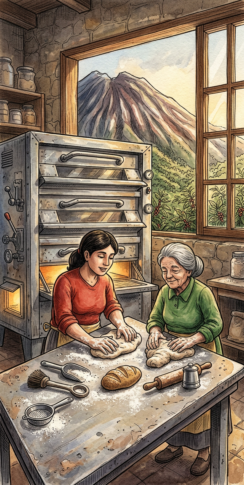

Tradición y Sabor Artesanal
Desde 2007, honrando las recetas tradicionales de nuestra madre y abuela, combinando técnicas clásicas con el toque innovador de la pastelería moderna.

Desde 2007, honrando las recetas tradicionales de nuestra madre y abuela, combinando técnicas clásicas con el toque innovador de la pastelería moderna.
